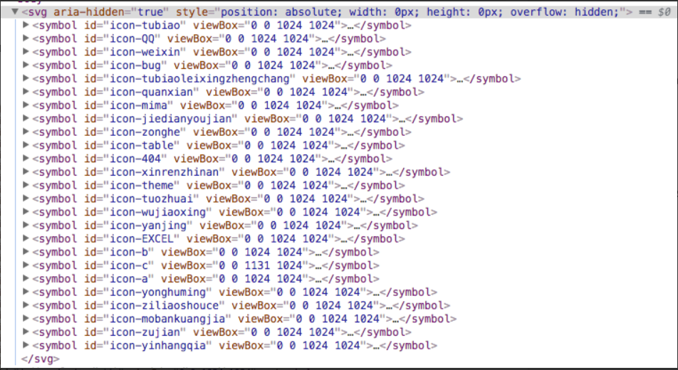

在前端网页的世界里，Icon是最基本的元素之一。使用Icon已成为前端开发者最基本的技能。下面将主要介绍利用SVG Sprites技术在前端中使用Icon的方法。
Icon的演化史
Icon最早用img实现，后为了提高效率，减少img请求，出现image sprite技术，实现将多个图片合成一个图片，然后利用 css 的 background-position 定位显示不同的 icon 图标。但该技术维护困难。
随后出现了font库实现页面图标，例如 Font Awesome。目前最常用的是iconfont，里面图标应有尽有，且开源。
iconfont的使用方法
unicode
优势：
- 兼容性最好，支持ie6+
- 支持按字体的方式去动态调整图标大小，颜色等等
劣势:
- 不支持多色图标
- 在不同的设备浏览器字体的渲染会略有差别
具体使用方法参考手摸手，带你优雅的使用 icon，不建议使用。
font-class
与unicode使用方式相比，具有如下特点：
- 兼容性良好，支持ie8+
- 相比于unicode语意明确，书写更直观。可以很容易分辨这个icon是什么。
symbol
随着IE浏览器逐渐淡出历史舞台，svg-icon 使用形式慢慢成为主流和推荐的方法，请参考未来必热：SVG Sprites技术介绍。其优点有：
- 支持多色图标了，不再受单色限制。
- 支持像字体那样通过font-size,color来调整样式。
- 支持 ie9+
- 可利用CSS实现动画。
- 减少HTTP请求。
- 矢量，缩放不失真
- 可以很精细的控制SVG图标的每一部分
具体使用方法如下：
- 使用SVG Sprite生成SVG雪碧图

- 加入通用css代码（引入一次就行）
1 | <style type="text/css"> |
- 挑选相应图标并获取类名，应用于页面
1 | <svg class="icon" aria-hidden="true"> |
使用svg-icon的好处是再也不用发送woff|eot|ttf| 这些很多个字体库请求了，所有的svg都可以内联在html内。且svg 是一个真正的矢量，不管再怎么的放缩它都不会失真模糊，而且svg可以控制的属性也更加的丰富，也能做出更加生动和复杂的图标。
生成SVG sprite的方法
推荐使用svg-sprite-loader ,它是一个Webpack loader。
1 | import '@/src/icons/qq.svg; //引入图标 |
自动导入多个SVG
使用 webpack 的 require.context 实现自动导入多个SVG Icon，避免手动一个个引入。
require.context有三个参数：
- directory：说明需要检索的目录
- useSubdirectories：是否检索子目录
- regExp: 匹配文件的正则表达式
1 | const requireAll = requireContext => requireContext.keys().map(requireContext) |
参考链接
- 手摸手，带你优雅的使用 icon,by 花裤衩.
- 未来必热：SVG Sprites技术介绍,by 张鑫旭.
- 如何在vue项目中优雅的使用SVG,by SilentLove.
- 关于webpack的require.context,by yeyan1996.